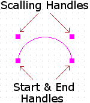

You create a circular arc of any angle using the arc tool.
Because it is a line, the arc adopts the current line
style. For more information about setting line styles, see
Creating
graphics.
To draw elliptical arcs, see Drawing elliptical
arcs.
To create a full circle, use the ellipse tool.
To draw a circular a rc
-
From the Place menu, choose the .
- Move the pointer to the center of the arc and click.
-
Use the mouse to establish the radius of the arc; click
to mark the start the arc.
The arc is drawn counterclockwise from this start point. -
Move the mouse along the path of the circle to draw the
arc and click to mark the end of the arc.
The arc appears in the selection color. -
Choose the selection tool or press
Escto dismiss the arc tool.
Or
From the Place menu, choose the . - Move the pointer to the center of the arc and press the left mouse button.
-
Drag the mouse and then release the left mouse button to
establish the radius of the arc and the location of the
start of the arc.
The arc is drawn counterclockwise from this start point. -
Move the mouse along the path of the circle to draw the
arc and click the left mouse button to mark the end of
the arc.
The arc appears in the selection color. -
Choose the selection tool or press
Escto dismiss the arc tool.
Shortcu t
Tool palette:
To edit an arc (circular or elliptical)
Use the start and end handles to increase or decrease the
size of the arc. You the scaling handles to scale or
re-shape the arc.
